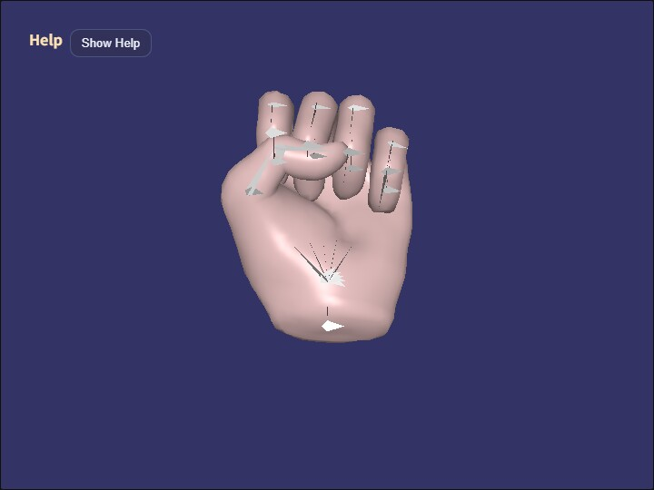

animation_state
English | 日本語

Overview
- This sample loads the hand from
samples/gltf_loader/hand.glband demonstrates a setup where each finger pose is still played as anAction, whileAnimationStatedecides which action should be selected at the current moment - The sample is arranged so that simply switching the desired state with
1 - 6starts the corresponding action, making it easier to follow the division of responsibilities between state control and action playback - The operation guide is shown in a collapsible help panel at the upper left by using
buildHelpPanelOptions()andshowOverlayPanel(), while the current state is displayed separately on the canvas HUD
How to Run
- Open ./animation_state.html
- Use a browser with WebGPU support, and check the help panel and HUD together with the sample when needed
webg Features Used
WebgApp: initializesScreen / Shader / Space / Input / Messagetogether and loadshand.glbwithloadModel(..., { format: "gltf" })Skeleton / Bone: used for bone display and bone rotationAction: handles pattern playback and action playback for the finger posesAnimationState: a minimal state machine that decides which action to start from the desired state and transition conditions- Each pose action is treated as a one-shot playback, and the last pose reached remains visible until the state changes
buildHelpPanelOptions() + showOverlayPanel(): builds the standard help panel at the upper left and toggles the visibility of the operation guideMessage: displays the HUD and state information
Checkpoints
- Confirm that the help panel appears at the upper left, that pressing
Hide Helpleaves only theShow Helpbutton, and thatShow Helprestores the panel - Confirm that the HUD shows
desired state / current state / current action / current pattern / transition, so you can follow the separation between state transitions and action playback directly on screen - When
Penables auto cycle, confirm that the desired state changes after a fixed interval and that the state machine keeps switching actions continuously - With
hand.glb, confirm that the hold ranges correspond to0: rest,1: fist,2-3: one finger extended,4-5: scissors,6-7: three fingers extended,8-9: four fingers extended,10-11: open hand, and12-13: fist
Controls
Hide Help / Show Helpin the upper-left help panel: show or hide the operation-guide body textW / S: rotate the model around the X axisA / D: rotate the model around the Y axisZ / X: rotate the model around the Z axisJ: print the bone list to the consoleE / R: rotate the selected bone around the X axisY / U: rotate the selected bone around the Y axisC / V: rotate the selected bone around the Z axisN / M: switch mesh selection backward or forwardO / I: hide or show the selected mesh9 / 0: show or hide bones1 - 5: change the desired state topose1 - pose56: change the desired state topose0/: advance to the next desired state@: restart the current stateP: toggle auto cycle on or off7 / 8: toggle rendering on or offK: enable delayed rendering modeQ: stop the sample
Notes
AnimationStatedoes not hold clip data itself; it is a thin control layer that receives existingActionobjects as controllers- This sample uses only the connection
state.action -> Action.start(actionId)and does not handle cross-fade or blend